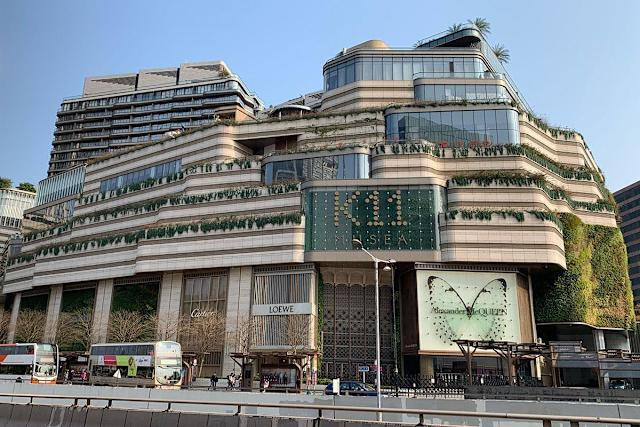
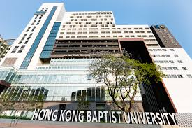
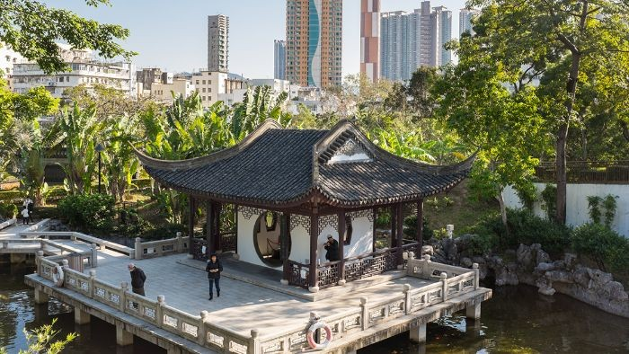
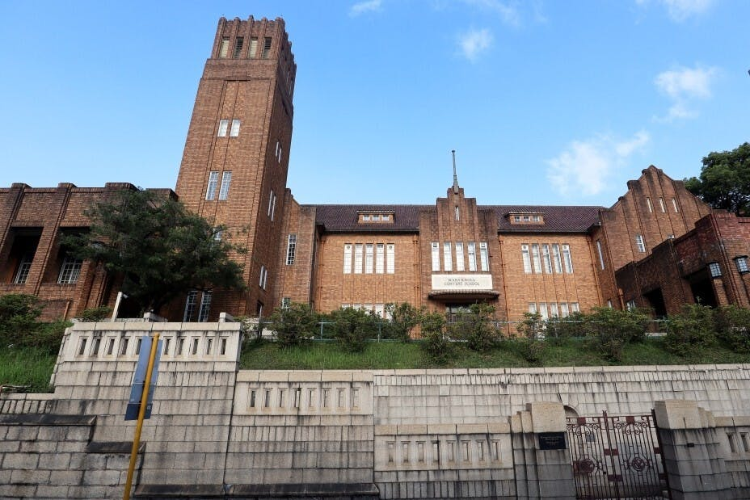
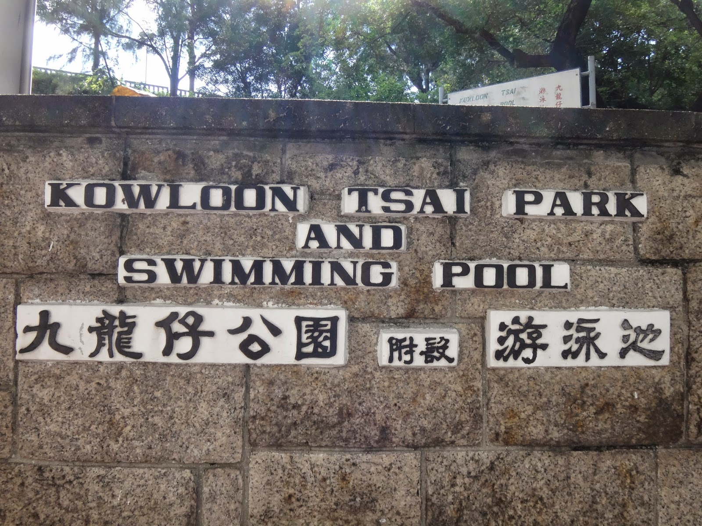
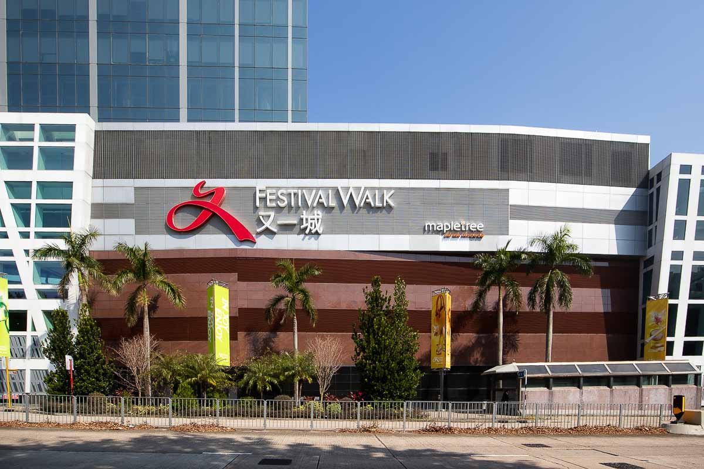
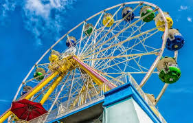
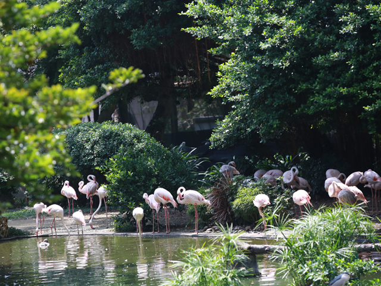

Where Culture Meets Leisure in the Heart of Hong Kong

A premium cultural-retail destination blending contemporary art, design, and luxury shopping. Its iconic harbour-front location offers panoramic views of Victoria Harbour, while interior spaces feature works by local artists.

Founded in 1956, HKBU is renowned for its serene campus and heritage-listed red-brick buildings. The School of Communication, a regional leader, attracts creative minds worldwide.

A beloved urban oasis among locals, featuring a tranquil lake, well-maintained lawns, and traditional Chinese pavilions. Morning tai chi sessions and weekend picnics reflect Hong Kong’s everyday life.
Kowloon Tong is a major transport hub with convenient access to all parts of Hong Kong. All core attractions are within 5-10 minutes’ walk from public transport:




